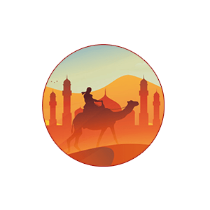

Kisah Hidayah Islam
Menu

Pengalaman Pertama Masuk Masjid Nabawi
Sang Legenda, Muhammad Ali
Risalah Islam Itu Sederhana Namun Pesannya Begitu Kuat
Kisah Haru Abdullah Bani’mah: Musibah yang Menyebabkanku Lumpuh
George bin Todzira, Hidayah Datang Saat di Medan Perang
Nama Muhammad, Kebenaran Yang Mereka Sembunyikan
Emanuel Adebayor: 13 Alasan Mengapa Saya Memilih Islam
Dari Penggemar Heavy Metal Menjadi Pencinta Alquran
Ulama al-Quran Vs Sang Pembunuh
Kebencian Yang Malah Menuntunku Kepada Cinta Sejati
Menjadi Wanita Shalehah Karena Nasihat Seorang Pemuda
Perjalanan Seorang Atheis Memeluk Islam
Kisah Wanita Cantik yang Bertaubat
Mualaf-Mualaf Yang Memiliki Pengaruh Besar Dalam Sejarah Islam
Hidayah: Islam Menjawab Kegelisahanku
Hidayah Allah Datang Kepadaku
Kisah Sahabat: Masuk Islamnya Salman Al-Farisi Radhiallahu ‘anhu
Khalid bin Walid ‘Pedang Allah’ yang Tak Terkalahkan (bag. 1)
Khalid bin Walid ‘Pedang Allah’ yang Tak Terkalahkan (bag. 2)
Khalid bin Walid ‘Pedang Allah’ yang Tak Terkalahkan (bag. 3 – Selesai)
Jin yang Shalih, Mengamalkan Ketaatan
Kisah Perjalanan Fudhail bin Iyadh Dari Perampok Jalanan Menjadi Seorang Ulama
Kisah Unik Mencari Buku Kuno
Kisah Nikah Mut’ah
Kisah Taubatnya Tiga Wanita Syiah
‘Amr bin Al-Jamuh
‘Amr bin Al-Jamuh Masuk Islam
Ketika Hidayah Islam Merengkuh Jiwaku
Tobatnya Sang Pembegal
Kisah Taubat Seorang Peragawati dari Negeri Barat
Meninggalkan Dusta, Diterima Kerja
Masuk Islamnya Pendeta Italia Setelah Menyaksikan Jenazah Raja Fahd
Air Matamu di Spanyol, Mendahului Pandanganmu